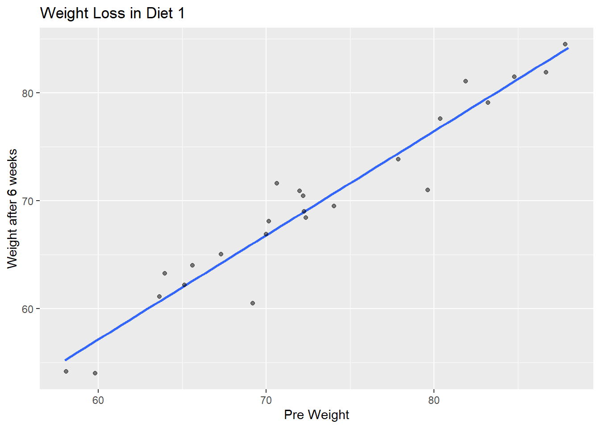

# load the data in here
diet_data <- read.csv("DietData.csv")Analysis of Variance
Here is some new data to play with a bit to explore one-way and two-way analysis of variance models. These data represent weight data associated with three different diet types. There are 76 observations of individuals with the following characteristics:
- Gender (0/1)
- Age (earth years. 🤓)
- Height (cm)
- Pre.weight & weight6weeks (kg)
- Diet (1,2,3)
The data are located as a CSV file named DietData.csv linked from the Canvas page. Load the data in and format things so they look correctly to you.
Exploratory Data Anlsysis
One of the first things to do is to look at the data and see if there are any obvious things. Go ahead and explore these data visually. What do you see?
library(dplyr)
Attaching package: 'dplyr'The following objects are masked from 'package:stats':
filter, lagThe following objects are masked from 'package:base':
intersect, setdiff, setequal, unionlibrary(ggplot2)diet_data$Diet <- factor(diet_data$Diet, levels = c(1, 2, 3), labels = c("Diet1", "Diet2", "Diet3"))diet_data$gender <- factor(diet_data$gender, levels = c(0, 1), labels = c("Male", "Female"))ggplot(diet_data, aes(x = pre.weight, y = weight6weeks, fill = Diet)) + geom_boxplot() +
labs(title = "Weight Loss by Diet Type", x = "Pre Weight", y = "Weight after 6 weeks") 
data_diet1 <- diet_data %>%
filter(Diet == "Diet1")
ggplot(data_diet1, aes(x = pre.weight, y = weight6weeks)) +
geom_smooth(method = "lm", se = FALSE) +
geom_jitter(alpha = 0.5) +
labs(title = "Weight Loss in Diet 1", x = "Pre Weight", y = "Weight after 6 weeks")`geom_smooth()` using formula = 'y ~ x'
data_diet2 <- diet_data %>%
filter(Diet == "Diet2")
ggplot(data_diet2, aes(x = pre.weight, y = weight6weeks)) +
geom_smooth(method = "lm", se = FALSE) +
geom_jitter(alpha = 0.5) +
labs(title = "Weight Loss in Diet 2", x = "Pre Weight", y = "Weight Loss (6 weeks)")`geom_smooth()` using formula = 'y ~ x'data_diet3 <- diet_data %>%
filter(Diet == "Diet3")
ggplot(data_diet3, aes(x = pre.weight, y = weight6weeks)) +
geom_smooth(method = "lm", se = FALSE) +
geom_jitter(alpha = 0.5) +
labs(title = "Weight Loss in Diet3 ", x = "Pre Weight", y = "Weight after 6 weeks")`geom_smooth()` using formula = 'y ~ x'Estimating Mean Values
Make a table of Weigth Loss by gender and diet.
# Table output
diet_data <- diet_data %>%
mutate(WeightLoss = pre.weight - weight6weeks)
table_data <- diet_data %>%
select(WeightLoss, gender, Diet)
head(table_data) WeightLoss gender Diet
1 3.8 Male Diet1
2 6.0 Male Diet1
3 0.7 Male Diet1
4 2.9 Male Diet1
5 2.8 Male Diet1
6 2.0 Male Diet11-Way Analysis of Variance
Diet Issues:
The underlying linear model.
\[ y_{ij} = \mu + \tau_{Diet, i} + \epsilon_j \]
Test the null hypothesis, \(H_O:\) There is no effect of diet on weight loss (e.g., \(\tau_{Diet-1} = \tau_{Diet-2} = \tau_{Diet-3} = 0.0\)). Is there evidence for one diet producing more weight loss than the others? Create an aov analysis and assign it to the variable fit.diet and examine its contents.
# Define model
fit.diet <- aov(WeightLoss ~ Diet, data = diet_data)
print(fit.diet)Call:
aov(formula = WeightLoss ~ Diet, data = diet_data)
Terms:
Diet Residuals
Sum of Squares 60.5270 410.4018
Deg. of Freedom 2 73
Residual standard error: 2.371064
Estimated effects may be unbalancedsummary(fit.diet) Df Sum Sq Mean Sq F value Pr(>F)
Diet 2 60.5 30.264 5.383 0.0066 **
Residuals 73 410.4 5.622
---
Signif. codes: 0 '***' 0.001 '**' 0.01 '*' 0.05 '.' 0.1 ' ' 1Are they all significantly different? Try the TukeyHSD() Interpret the results.
There is a significant result, the following test will determine which diet is more effective.
# Posthoc test
TukeyHSD(fit.diet) Tukey multiple comparisons of means
95% family-wise confidence level
Fit: aov(formula = WeightLoss ~ Diet, data = diet_data)
$Diet
diff lwr upr p adj
Diet2-Diet1 -0.032000 -1.6530850 1.589085 0.9987711
Diet3-Diet1 1.848148 0.2567422 3.439554 0.0188047
Diet3-Diet2 1.880148 0.3056826 3.454614 0.0152020The Turkey test finds that diet 3 is significantly different from the other two.
How much of the variation is explained? If you notice when you do a summary from a lm() (regression) model, it gives you the \(R^2\) values directly (remember \(R^2 = \frac{SS_{model}}{SS_{Error}}\)). Does summary() of your aov model give you that?
# How much variance?
SS_Model <- (60.5)
SS_Total <- (60.5 + 410.4)
R_squared <- (SS_Model / SS_Total)
print(R_squared)[1] 0.1284774approximately 12.84% of the variation in weight loss is explained by the different diets
the original aov did not give these R squared values directly
Since I asked the question, the answer is probably no. Why does it not do this? Probably for historical reasons, which are a bit of a pain in the backside. That being said, there are some tidy ways to fix this issue. I’m going to use the broom package which allows us to clean up (or tidy if you will) the model objects. This will take the model object and pull out all the ANOVA table stuff and put it into a tibble.
library( broom )
# use your model fit next (I called mine fit.diet)
tidy_diet <- tidy( fit.diet )
tidy_diet# A tibble: 2 × 6
term df sumsq meansq statistic p.value
<chr> <dbl> <dbl> <dbl> <dbl> <dbl>
1 Diet 2 60.5 30.3 5.38 0.00660
2 Residuals 73 410. 5.62 NA NA Now, since it is all easily accessible, we can calculate the \(R^2\) from the new model output.
# Estimate the variance explained from the raw sums of squares
r2_Diet <- tidy_diet$sumsq[1] / sum( tidy_diet$sumsq )
r2_Diet [1] 0.1285269Gender:
The underlying linear model.
\(y_{ij} = \mu + \tau_{gender, i} + \epsilon_j\)
Independent of the diet, test the null hypothesis \(H_O:\) There is no difference in weight loss between genders (e.g., $ =* = 0.0 $). Is there evidence for one gender being significantly different than another? How much of the variation is explained (another \(R^2\) by gender)?
fit.gender <- aov(WeightLoss ~ gender, data = diet_data)
summary(fit.gender) Df Sum Sq Mean Sq F value Pr(>F)
gender 1 0.3 0.278 0.044 0.835
Residuals 74 470.7 6.360 tidy_gender <- tidy( fit.gender )
r2_gender <- tidy_gender$sumsq[1] / sum( tidy_gender$sumsq )
print(r2_gender)[1] 0.0005913517How do you interpret these results thus far?
Only 0.59% of the differences in weight loss can be explained by variation in gender.
Do genders respond differently to diets?
There is no evidence here to suggest that genders respond differently to diets.
So here we do something a bit different. We want to simultaneously ask the following questions:
\(y_{ijk} = \mu + \tau_{Diet,i} + \tau_{gender,j} + \epsilon_k\)
- Do diets influence weight loss?
- Do genders influence weight loss?
- Is there an interaction where different genders respond differently to different diets?
In \(R\), this is done as:
# diet model
fit.dietCall:
aov(formula = WeightLoss ~ Diet, data = diet_data)
Terms:
Diet Residuals
Sum of Squares 60.5270 410.4018
Deg. of Freedom 2 73
Residual standard error: 2.371064
Estimated effects may be unbalancedtidy_diet# A tibble: 2 × 6
term df sumsq meansq statistic p.value
<chr> <dbl> <dbl> <dbl> <dbl> <dbl>
1 Diet 2 60.5 30.3 5.38 0.00660
2 Residuals 73 410. 5.62 NA NA # gender model
fit.genderCall:
aov(formula = WeightLoss ~ gender, data = diet_data)
Terms:
gender Residuals
Sum of Squares 0.2785 470.6503
Deg. of Freedom 1 74
Residual standard error: 2.521932
Estimated effects may be unbalancedtidy_gender# A tibble: 2 × 6
term df sumsq meansq statistic p.value
<chr> <dbl> <dbl> <dbl> <dbl> <dbl>
1 gender 1 0.278 0.278 0.0438 0.835
2 Residuals 74 471. 6.36 NA NA # interaction model
diet_data$interaction <- interaction(diet_data$gender, diet_data$Diet)
model_interaction <- lm(WeightLoss ~ interaction(gender, Diet), data = diet_data)
summary(model_interaction)
Call:
lm(formula = WeightLoss ~ interaction(gender, Diet), data = diet_data)
Residuals:
Min 1Q Median 3Q Max
-5.5091 -1.2958 0.0705 1.2159 5.4500
Coefficients:
Estimate Std. Error t value Pr(>|t|)
(Intercept) 3.0500 0.6197 4.922 5.49e-06 ***
interaction(gender, Diet)Female.Diet1 0.6000 0.9600 0.625 0.5340
interaction(gender, Diet)Male.Diet2 -0.4429 0.8764 -0.505 0.6149
interaction(gender, Diet)Female.Diet2 1.0591 0.9342 1.134 0.2608
interaction(gender, Diet)Male.Diet3 2.8300 0.8616 3.284 0.0016 **
interaction(gender, Diet)Female.Diet3 1.1833 0.9122 1.297 0.1988
---
Signif. codes: 0 '***' 0.001 '**' 0.01 '*' 0.05 '.' 0.1 ' ' 1
Residual standard error: 2.319 on 70 degrees of freedom
Multiple R-squared: 0.2009, Adjusted R-squared: 0.1438
F-statistic: 3.519 on 5 and 70 DF, p-value: 0.006775What is the \(R^2\) for this model?
The R-squared of the interaction model is 0.2009. This mean 20.09% of the variation in data can be explained by the interaction between gender and diet type
# best model variance explainedExplain, in words, your findings and interpretation of these findings
Which Model is Best?
The best model found here is the interaction model between gender and diet type.
How would you compare the models you generated? How do you interpret the findings?
You can compare all the models generated by calculating an R-squared value for each. The R-squared values explains the percentage of variation in the data that can be explained by the given model.
The first model compared diet type (1,2,or 3) to weight loss and produced a R-squared value of 0.1285269, meaning the model explains 12% of variation in the data.
The second model compared gender to weight loss and produced a remarkably low R-squared value of 0.0005913517, meaning that the model explains only 0.59% of the variation in the data.
The third model compared the interaction between gender and diet type to weight loss. This produced a R-squared value of 0.2009 meaning that 20.09% percent of variance in the data can be explained by the model.
Given that the third model, the interaction model, explains the highest amount of variation in data we can conclude that different genders had differing weight loss results based on the diet they were taking part in.
The lowest p-value given by the interaction model is from Male gender/ Diet 3 giving a value 0.0016. This suggests that diet 3 had a significantly different effect on the weight loss of males and females.
If one was trying to determine the most effective diet for weight loss, this data indicates that it would be Diet 3 if implemented in males.